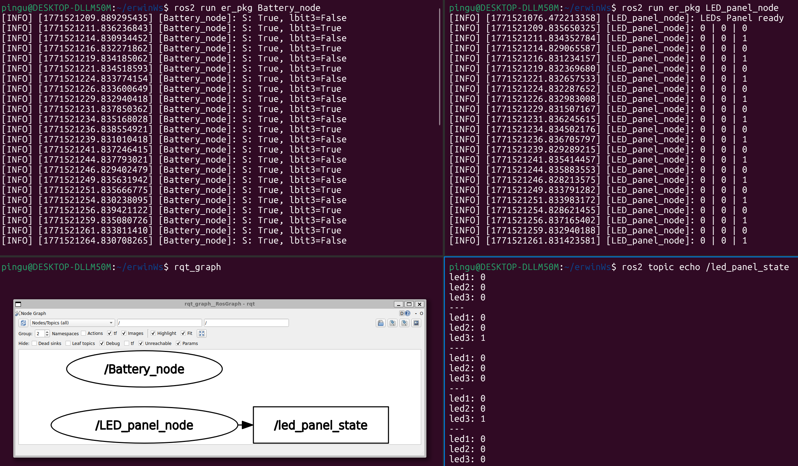

(A3) Activity 3: ROS 2 Custom Interfaces
Overview
This activity extends the services workflow by introducing custom ROS 2 interfaces (one .msg and one .srv) and integrating them into a two-node system:
- A Battery node simulates the battery level and acts as a service client.
- An LED panel node exposes a service server (
/set_led) and publishes the LED panel state on a topic (/led_panel_state).
Conceptually, the goal is to use a service request to toggle an LED depending on battery state: when the battery becomes empty, an LED is powered ON, and when it becomes full again, it is powered OFF.

System Architecture
Nodes
-
Battery_node- Service client for:
/set_led
- Service client for:
-
LED_panel_node- Service server for:
/set_led - Topic publisher for:
/led_panel_state
- Service server for:
Interfaces
- Custom service:
LEDpanel.srv(used by/set_led) - Custom message:
BatStatus.msg(used by/led_panel_state)
Custom Interfaces
Before implementing the nodes, a dedicated interfaces package (in this case, er_interfaces) is used to define and build the custom service and message types.
Service definition: LEDpanel.srv
The service definition is designed to represent a 3-LED panel through three boolean request fields and a single boolean response field:
- Request
lbit1(bool): LED 1 commandlbit2(bool): LED 2 commandlbit3(bool): LED 3 command- Response
success(bool): confirms whether the request was processed correctly
Is important to consider that request/response field names were written using lowercase letters and without symbols to avoid build/compilation issues in the ROS 2 interface generation pipeline.
Message definition: BatStatus.msg
The LED panel state is published as a custom message with three int8 fields:
led1(int8): LED 1 state (0/1)led2(int8): LED 2 state (0/1)led3(int8): LED 3 state (0/1)
This representation is intentionally minimal: each LED state is expressed as a numeric bit (0 = OFF, 1 = ON).
Finally, to generate and use these interfaces, the .msg and .srv paths must be registered in the interface generation section (rosidl_generate_interfaces(...)) in CMakeLists.txt.
rosidl_generate_interfaces(${PROJECT_NAME}
"msg/BatStatus.msg"
"srv/LEDpanel.srv"
#Remaining file paths
)
Node 1 — LED Panel Node (Service Server + State Publisher)
The LED_panel_node is responsible for two roles:
- Hosting the
/set_ledservice server (custom typeLEDpanel) - Publishing the LED panel state on the
/led_panel_statetopic (custom typeBatStatus)
Also, instead of publishing panel state continuously with a timer, this node publishes only when there is a meaningful change (when a service request arrives). This avoids sending redundant messages and keeps the topic output focused on actual state transitions.
#!/usr/bin/env python3
import rclpy
from rclpy.node import Node
from er_interfaces.srv import LEDpanel
from er_interfaces.msg import BatStatus
class MyPanel(Node):
def __init__(self):
super().__init__("LED_panel_node") #Only identification
self.server = self.create_service(LEDpanel,"set_led", self.set_status)
self.publisher_ = self.create_publisher(BatStatus, "led_panel_state", 10)
self.get_logger().info("LEDs Panel ready")
def set_status(self, request: LEDpanel.Request, response: LEDpanel.Response):
msg = BatStatus()
if (request.lbit3):
msg.led3 = 1
else:
msg.led3 = 0
self.publisher_.publish(msg)
self.get_logger().info(f"{msg.led1} | {msg.led2} | {msg.led3}")
response.success = True
return response
def main(args=None):
rclpy.init(args=args)
LED_panel_node = MyPanel()
rclpy.spin(LED_panel_node)
rclpy.shutdown()
if __name__ == "__main__":
main()
Service callback behavior (set_status)
When the service receives a request:
- A
BatStatusmessage is created. - The requested LED bit is translated into a
0/1value in the correspondingmsg.ledXfield. - The message is published to
/led_panel_state. - A logger prints a simple “panel visualization” in the terminal (useful as a lightweight debugger).
response.successis set toTrueand returned to the client.
For simplicity, the callback only evaluates request.lbit3, meaning the logic toggles only the least significant bit (LED 3). LEDs 1 and 2 remain available in the interface design but are not used in the current implementation.
Node 2 — Battery Node (Service Client + Battery Simulation)
The Battery_node simulates battery life and triggers LED changes by calling the /set_led service.
#!/usr/bin/env python3
import rclpy
from rclpy.node import Node
from er_interfaces.srv import LEDpanel
from functools import partial
class MyBat(Node):
def __init__(self):
super().__init__("Battery_node") #Only identification
self.client = self.create_client(LEDpanel,"set_led") #Service type, Service name
self.level = 100
self.create_timer(0.1, self.bat_level)
def call_status_alert(self, lbit3: bool):
while not self.client.wait_for_service(timeout_sec = 1.0):
self.get_logger().info("Server not available")
request = LEDpanel.Request()
request.lbit3 = lbit3
self.future = self.client.call_async(request) #asyncronous request
self.future.add_done_callback(partial(self.add_status_alert, request))
def add_status_alert(self, request: LEDpanel.Request, future):
response = future.result()
self.get_logger().info(f"S: {response.success}, lbit3={request.lbit3}")
def bat_level(self):
self.level -= 1
if (self.level == 60):
self.call_status_alert(False)
elif (self.level == 0):
self.level = 100
self.call_status_alert(True)
def main(args=None):
rclpy.init(args=args)
Battery_node = MyBat()
rclpy.spin(Battery_node)
rclpy.shutdown()
if __name__ == "__main__":
main()
Service-call workflow (call_status_alert + add_status_alert)
- Wait for server:
call_status_alert()useswait_for_service()to ensure/set_ledis available (prints a message if not). - Build request: creates
LEDpanel.Request()and assignsrequest.lbit3from the input boolean (True= ON,False= OFF). - Send asynchronously: calls
call_async(request)so the node keeps running while the request is processed. - Handle response:
add_status_alert()retrievesfuture.result()and logssuccessplus the requestedlbit3value for verification.
Battery simulation approach
A timer runs every 100 ms (0.1 s) and executes a battery update function:
self.levelstarts at 100- Each timer tick decrements the level by 1
- When specific thresholds are reached, the node sends a service request to the LED panel
This timer-driven logic emulates a battery discharge/charge cycle without requiring real sensor input. The thresholds act as “events” that trigger service calls. The battery node sends requests using an asynchronous service call (call_async). When the service returns a response the callback prints confirmation info (success) along with the request bit that was sent (lbit3), allowing quick validation that the interaction worked as expected.
Terminal Commands
-
Run the nodes
-
LED_panel_node node
-
Battery_node node
-
-
Verifying the System Graph and topic msg
- Topic msg
- System Graph
Results (Terminal and rqt_graph)
